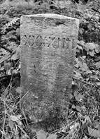
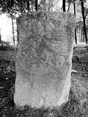
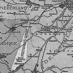

> nieuwsbrief
> 35e jg. - 4e trimester 2017
Bijdragen over:
|
Hernieuwen ledenbijdrage voor 2017
Dit is een
laatste oproep tot hernieuwing van de ledenbijdragen voor 2017,
gericht tot diegenen die tot nog toe verstek gaven. Toetreden
kan nog steeds, mits overboeking van de ledenbijdrage. Even
herinneren: de minimumbijdrage bleef ongewijzigd en bedraagt 29
. In ruil daarvoor verzekeren we u andermaal de stipte
toezending van het al in mei verschenen nieuwe Jaarboek de Nederlanden
extra muros het 39e al en van de vier nummers van
ons kwartaalblad
Nieuwsbrief Zannekin. Vanaf het bedrag van 35 boeken we
u met dank als steunend lid. Vereffening graag via onze rekening
IBAN: BE13 4648 2202 5139 BIC: KREDBEBB t.n.v.
Vereniging/Stichting ZANNEKIN, Paddevijverstraat 2, 8900 Ieper.
Ontmoetingsdag Zannekin
Onze
Ontmoetingsdag komt er aan op 14 oktober aanstaande. De
volgende paginas van deze Nieuwsbrief staan in grote mate in
het teken van die dag. Bij ie gelegenheid verschijnt ten behoeve
van de deelnemers een aparte brochure, waarin dieper ingegaan
wordt op de aan bod komende themas, zijnde de geschiedenis van
Eupen en het Vierlandenpunt te Vaals.
Zannekin-Ontmoetingsdag
te
Eupen op zaterdag 14 oktober 2017
EUPEN
en het VIERLANDENPUNT - 1815-2017, meer dan een grensgeval
Onze
najaarsstudiedag heeft in de herfst plaats in het oostelijke
deel van België waar in de voorbije tweehonderd jaar de grenzen
meer dan eens verschoven. Tijdens deze dag worden de historische
gebeurtenissen sinds 1815, het jaar van het Congres van Wenen,
uit de doeken gedaan. Het wordt een boeiende dag in een unieke
omgeving.
Programma
08.50
uur: Halle Station, vertrekplaats busrit naar Eupen.
10.45
uur: Eupen Station - tweede opstapplaats.
EUPEN:
domein van het Parlement der Deutschsprachigen Gemeinschaft
(niet in het gebouw zelf), de Sint-Niklaaskerk, patriciërshuizen
van de textielbarons (afhankelijk van de bezoektijden en
mogelijkheden in het parlement en rekening houdend met
huwelijken of uitvaarten in de kerk wordt het schema
aangepast).
12.30
uur: busrit langs het Vierlandengebied (De Bokkenrijder -
Viergrenzenweg) naar Vaals.
13.30
uur: Limburgs middagmaal (onder buffetvorm) met vrije
keuze uit: Limburgse forel met remouladesaus - Limburgse rauwe
ham met meloen - Tomaat met mozzerella *** Soep van de dag ***
Vis van de dag - Speenvarkenrugfilet met stroopsaus -
Groentegarnituur, salade, frietjes en aardappelgratin ***
Chocolade, vanille en aardbeien 1 mousse
Vervolgens
lezing over de "Revolte van Mützenich - 1949" en over
"Neu-Moresnet en het Vierlandenpunt". Korte wandeling langs de
voormalige grenzen met nog overgebleven grensstenen.
16.30
uur: kannetje koffie met Limburgse vlaai.
17.30
uur: terugrit naar Eupen. 18.00 uur te Eupen. 19.45 uur te
Halle.
Deelnameprijs alles
inbegrepen: leden 59 per persoon; niet-leden: 65 . Aanmelden
tot uiterlijk 8 oktober via brief of e-bericht aan: maurits.cailliau@skynet.be
en gelijktijdige overboeking van dit bedrag met vermelding van
naam en adres + opstapplaats (Halle of Eupen) op
rekening IBAN: BE13 4648 2202 5139 BIC: KREDBEBB 9 oktober.
Het verdrag van Wenen
De oude
Belgisch-Pruisische grens van voor 1919 liep voorheen dieper ons
land in dan thans en ontstond na de val van het Franse
Keizerrijk (de Slag bij Waterloo) en het daaropvolgend "Verdrag
van Wenen" (1815) dat Europa herverdeelde vanuit de gedachte om
in de toekomst elke nieuwe poging tot overheersing door
Frankrijk, door de nieuwe grootmachten te beletten.
Onze
gewesten werden ingedeeld bij het Koninkrijk der Nederlanden dat
zowel Nederland als België omvatte. Luxemburg (het huidige
Groot-Hertogdom en de Belgische provincie) behoorde ten
persoonlijke titel aan de Nederlandse Koning Willem I.
In het
zuiden grensde het Verenigd Koninkrijk aan Frankrijk waartegen
het een bufferstaat moest vormen. In het oosten lag Pruisen. De
nieuwe grens tussen de Nederlanden en Pruisen werd vastgesteld
in het "Verdrag van Aken" (26.6.1816).
In
artikel 2 van dat verdrag wordt het verloop van die grens als
volgt omschreven: "De demarcatielijn zal beginnen op de Moesel
op het punt waar, op de rechteroever, deze rivier de grens met
Frankrijk verlaat, de Moesel afdalend volgt tot aan de monding
van de Sure, deze volgt tot aan de monding van de Our en deze
volgt tot aan het punt waar de beek de grens bereikt van het
kanton Sankt-Vith.
Houten grenspalen
Net
zoals alle andere grenzen werd ook deze scheidingslijn
afgebakend met grenspalen. Artikel 42 van het Proces-Verbal de
démarcation entre le Grand-Duché et la Prusse beschrijft de
palen die voor de afbakening van deze grens zullen gebruikt
worden: Deze palen zullen van eikenhout zijn, vierkant en met
een lengte van 12 Rijnvoet; 8 bovengronds en 4 in de grond. Ze
zullen beschilderd zijn in zwart-wit langs de Pruisische zijde
en oranje-wit langs de Nederlandse, genummerd zijn beginnend
vanaf de Moesel." De nummering van deze grenspalen begint aldus
aan de Duits-Frans-Luxemburgse grens aan de Moesel bij
Perl-Apach-Schengen en loopt langsheen de huidige
Luxemburgs-Duitse grens naar het noorden toe. Paal nr.75 is de
laatste van die reeks grenspalen: hij staat op het uiterste
noordpunt van het Groot-Hertogdom vlakbij de
Belgisch-Luxemburgse grenspaal nr.286, die van de andere kant
van het Groot-Hertogdom komt. Vanaf dit punt loopt de nummering
verder naar het noorden, toe om te eindigen aan het beroemde
Drielandenpunt te Vaals-Gemmenich-Aken met paal nr.193. De
oorspronkelijke houten palen werden in de loop der jaren
vervangen door stenen palen waarbij de originele nummering
echter wel behouden bleef. Omstreeks 1840 waren alle houten
palen verdwenen.
Luxemburg autonoom
Wanneer
in 1830 de zuidelijke (Belgische) provincies zich losscheurden
van Nederland, stond het Groot-Hertogdom aan de Belgische kant
en werd het mee opgenomen in het nieuwe Belgische grondgebied.
In 1839
echter, na het aanvaarden van de 24 Artikelen door België en
Nederland, werd het Groot-Hertogdom gesplitst in twee gedeelten:
het westelijke (Franstalige) deel ging naar België en, werd de
provincie Luxemburg; het oostelijke (Duitstalige) deel, bleef
persoonlijk bezit van de Nederlandse Koning Willem I. In 1841
werd het als Groot-Hertogdom echter een autonome staat.
De Belgisch-Pruisische grens
De
toenmalige Belgisch~Duitse grens begon aan de uiterste
noordoosthoek van het Groot-Hertogdom (Schmiede), liep recht
naar het noorden toe via Poteau (een gehucht van, de gemeente
Recht), tussen Stavelot en Malmedy door, langs Hockay naar de
Baraque Michel, dwars door de Hoge Venen (waar zij vanaf paal
nr.157 het riviertje de Helle volgt), draaide links rond Eupen
om in Baelen de weg Eupen-Welkenraedt-Henri-Chapelle te bereiken
en deze te volgen tot aan het Maison-Blanche, daar de weg
volgend in de richting Aken om in Moresnet bijna pal noordwaarts
en in rechte lijn naar het Drielandenpunt Vaals-Gemmenich-Aken
te lopen.
Door een
verschil in interpretatie (daarbij al of niet geholpen door
zakelijke belangen omtrent het bezit van de zinkmijnen te
Moresnet) dat zowel Pruisen als Nederland aan de
grensbeschrijving gaven, ontstond betwisting over het precieze
verloop van dat laatste stukje grens tussen Moresnet en Vaals.
Het conflict dat hierrond ontstond, leidde tot het ontstaan van
het neutrale gebied "Onzijdig Moresnet" dat gedurende meer dan
honderd jaar bleef bestaan. Het beroemde Drielandenpunt" was zo
gedurende meer dan een eeuw een "Vierlandenpunt".
De
historische grenspalen staan er niet enkel als merktekens in het
landschap, maar tegelijk ook als getuigen van een stukje
geschiedenis van het land en het volk uit onze Oostkantons.
Tussen het Groot-Hertogdom en het gehucht Poteau vormt deze
grens thans nog de grens tussen de provincies Luik en Luxemburg.
(tekst: Jan Hellinx)
Waarom Vaals deel van de Republiek is geworden
Jan
van Tongeren, Maarssen
De Partage 1644 1662
De Overmase landen bestonden uit de heerlijkheden Valkenburg, Dalhem en s-Hertogenrade. Van Staatse zijde heeft men aanvankelijk de opvatting verdedigd, dat de Overmase landen van het hertogdom Limburg afhankelijk waren. Na de verovering van Maastricht 1632 bezette Frederik Hendrik dan ook eerst de vesting Limburg en daarna pas de steden Valkenburg, Dalhem en s-Hertogenrade. In 1635 gingen al deze veroveringen weer verloren. Het hertogdom Limburg is sindsdien in Spaanse handen gebleven.
De hoofdsteden van de Overmase landen werden daarentegen in 1644 door de commandant van Maastricht heroverd. Dit betekende echter niet dat de Republiek in deze contreien de uitsluitende heerschappij had verkregen, want de Spanjaarden wisten zich staande te houden en bleven naast de ambtenaren de Staten-Generaal het gezag uitoefenen.
Op 17 juni 1645 liet de Staten-Generaal weten om alles te laten in statu, gelijck het was voor de reductie en demolitie van Valkenburg, Daelhem en Herzogenrade. Bij de onderhandelingen van december 1646 verlangden de Staatse afgevaardigden echter dat de Overmase landen aan de Republiek zouden worden afgestaan. Spanje daarentegen drong aan op de handhaving van het status quo. De Staatse gemachtigden stemden hierin toe, doch onder de uitdrukkelijke verklaring, dat de Republiek in het bezit van het Overmase was. Hierna werd op 24 december 1646 de volgende bepaling onder artikel 3 van het vredesverdrag opgenomen: Wat aengaet de drie Quartieren van Over-Mase, te weten Valkenburch, Daelhem en s-Hertogenrade, deselve suyllen blijven in den Staet in de welkcke die sich jegenwoordig bevinden, ende in cas van disputte en controversies al deselve gherenvoyeert worden aen de Chambre mie partie, omme aldaer te worden ghedecideeert.
Na de sluiting van het verdrag van Münster op 30 januari 1648 achtte de Republiek zich in dit gebied heer en meester, maar ook Spanje wist zich te handhaven. De Staten-Generaal ontweken de kwestie en stelden voor eerst enkel punten, waaronder de Overmase geschillen, langs diplomatieke weg af te doen. Op 23 december 1653 werd tenslotte de chambre-mi-partie, met de plechtigheid aan dit belangrijke instituut verschuldigd, in Mechelen geopend. Volgens de instructie van 17 oktober 1653 zouden de kwesties de Overmase landen betreffende moeten worden afgedaan, vooraleer met andere zaken zou kunnen worden begonnen. Toen Spanje en de Republiek in 1657 (of wellicht reeds eerder) tot de conclusie waren gekomen, dat met de chambre-mi-partie niets te bereiken viel, werd door een commissie, bestaande uit de Spaanse ambassadeur Gammara en gedeputeerden der Staten-Generaal, op 25 februari en 27 maart 1658 voorlopig vastgesteld dat elk van beide mogendheden de gerechte helft van de Overmase landen zou krijgen. Dit uiterst vage criterium bracht de zaak niet verder. Wel deed de Republiek impliciet afstand van haar beweerd recht op uitsluitende heerschappij.
Aldus werd de mogelijkheid geschapen om ten aanzien van de retorsiemaatregelen, waarvan deze landen zeer veel te lijden hadden, tot een compromis te komen. Een overeenkomst van 13 december 1659 tussen de Spaanse ambassadeur en Staats-gedeputeerden, brachten interim tot stand, dat echter niet het gewenste resultaat had. Toen eenmaal was vastgesteld, dat elk van beide partijen de helft zou krijgen, die haar toekwam, moest nog bepaald worden, op welke wijze de verdeling zou plaats vinden.
De republiek wenste het bezit van het gehele Valkenburgse
kwartier, omdat het dichtst aan de Maas en dichtbij Maastricht
lag. In dit geval zou Spanje de landen van Dalhem en
s-Hertogenrade krijgen. De handelsweg van Holland over Maastricht
naar Aken liep door de bank Gulpen en vervolgens door het gebied
van de verenigde bank Holset, Vaals en Vijlen. De laatste route
was van belang voor de koperhandel. Vanuit de stapelplaats
Amsterdam werden grote hoeveelheden Zweeds koper naar Aken en
Stolberg getransporteerd.
Kalamijn
Neutraal Moresnet vormde een driehoek waarvan de punt tot Vaals reikte
Uit het nabije Moresnet betrok de Akense
koperindustrie kalamijn of zinkerts. La Calamine/Kalmijn (galmei,
cadmia of zinkspaat). De naam van het erts is ontleend aan het
Griekse woord Cadmia, waarnaar La Calamine is vernoemd. Het werd
gebruikt om er geel koper, messing of latoen, een legering van
roodkoper en zink te maken. De vermenging van deze grondstoffen
leverde geelkoper op, dat door de koperslagers tot allerlei
artikelen, zoals ketels en koperdraad, verwerkt werd. Deze
legering is namelijk harder en buigzamer dan roodkoper. Met de
voorwerpen gemaakt van dit materiaal hebben vooral Bouvignes en
Dinant naam gemaakt.
Uit groeven te Kelmis (La Calamine), onderdeel van het complex Altenberg, werd de kalmijn betrokken, die naar Eijsden werd vervoerd en aldaar verwerkt. De niet voor Eijsden bestemde aanvoer werd in Maastricht op schepen geladen (De Kalaminkstraat herinnert daaraan). Van de andere groeven profiteerde de industrie van Aken.
Eerder, naar aanleiding van een grensgeschil tussen Aken en Filips de Goede had Keizer Sigismund op 25 oktober 1423 Aken in het bezit van de älde kailmynberg" gesteld. Ondanks die keizerlijke beslissing "behielt der hertzog van Brabant den kailmynbergh mit gewalt in". De opbrengst van de kalmijngroeven werd dan ook van 1439 tot 1794 in de rekeningen van de Limburgse rentmeester verantwoord. Daaruit blijkt "dat alle Limburgse cuylen" waar kalmei gedolven werd, verpacht werden, meestal aan groothandelaren uit Antwerpen.
Grote hoeveelheden van deze eindproducten belandden wederom te Amsterdam en werden vandaar uit verhandeld. Het ruw koper dat naar Aken verzonden werd, en de eindproducten die retour naar Amsterdam gingen, waren voor de koning van Spanje een bron van inkomsten. Bij een behoud van het land van s-Hertogenrade konden de Staten-Generaal de handel van deze belasting bevrijden ofwel zelf van de inkomsten profiteren. Hunne Hoogmogenden zouden in dat geval ook de doorvoer van koperwerk naar Antwerpen dat vrijgesteld was van het licentgeld kunnen belasten en aldus de opbrengst met wel vijfentwintigduizend gulden per jaar vermeerderen.
De belanghebbende kooplieden van Amsterdam pleitten, gesteund door de magistraat van de stad, pleitten eveneens voor het behoud van s-Hertogenrade en voor de eliminatie van het Spaanse licent. Zij wisten daarbij zakelijke argumenten te verbinden met religieuze gezichtspunten. Het land van s-Hertogenrade, zo betoogden zij, ligt slechts op korte afstand van Aken.
De Geer
Aangezien in de vrije rijksstad Aken gereformeerde godsdienstoefeningen verboden waren, gingen de protestantse kopermeesters in s-Hertogenrade en Vaals ter kerke. Indien deze mogelijkheid afgesneden werd voorzagen de Amsterdamse kooplieden een grootscheepse emigratie van koperslagers naar Zweden. Wegens de harde persecuties vanuit Aken had enige jaren voordien al zulk een uittocht plaatsgevonden. Het gevolg was, dat er toen in Zweden veel meer koperdraad gemaakt werd dan te Aken. Indien d